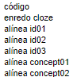

Base de Questões
Usufruir de uma base de questões, com alíneas, para criar um novo teste, escolhendo questões e que alíneas vão estar no teste.
Duas maneiras de pensar na aleatoriedade :
- questões planeadas (
pq()) - questões aleatórias (
rq())
Uma questão planeada
Numa “questão planeada” todas as variantes são pré-calculadas, são pensadas no momento de criação do teste e, como tal, em número finito sendo este sempre indicado na variável VARCOUNT <- 6 (neste exemplo, podem ser produzidas 6 variantes). Uma questão planeada obriga ao uso de listas ou vetores onde se armazenam valores e textos necessários a cada variante. Por hábito, usa-se esta variável VAR <- 1 para especificar qual é a variante a ser produzida quando se faz o “knitr”.
O R Mardkown seguinte é um modelo de questão planeada.
---
title: "c1-descritiva-planeada"
author: "rmdmoodle"
date: "2024/05/21"
output: html_document
---
Objetivo de avaliação: Capítulo 1 - Estatística Descritiva
Questão de variantes planeadas: predefinem-se
todos os casos a serem sorteados pelos estudantes
no momento do teste.
# código
"""{r echo=FALSE, results=FALSE}
# Obrigatório no método de variantes planeadas
VAR = 1 # Faz knitr com a variante escolhida em VAR
VARCOUNT = 3 # Total de variantes
# Avoid scientific notation in all document
options(scipen = 999)
# No geral, não mostra "code chunks"
knitr::opts_chunk$set(echo = FALSE)
# Fixar as variantes produzidas
set.seed(11)
# Dimensão das amostras (quantidade em VARCOUNT)
dimX <- c(4, 5, 6)
# Inventa amostras (quantidade em VARCOUNT)
amostra <- list(
round(rnorm(dimX[1], 8, 2),1),
round(rnorm(dimX[2], 10, 2),1),
round(rnorm(dimX[3], 12, 2),1)
)
# Tabelas e matrizes bem expostas no Moodle
library(kableExtra)
# Produz uma "R matrix" para ficar bem no Moodle
create_matrix <- function(v) {
# "v" é a variante 1, 2, 3,
matriz_linha <- matrix(amostra[[v]], ncol = dimX[v])
rownames(matriz_linha) <- "volume (em m3)"
# Não é necessário
#colnames(matriz_linha) <- as.character(seq(1,dimX[v]))
return(matriz_linha)
}
"""
# enredo
Considere a seguinte variável aleatória:
**X** : Volume (em \(m^3\)) ocupado por uma acácia com 50cm de altura
e a amostra
"""{r echo=F}
create_matrix(VAR) %>%
kbl() %>%
kable_styling() %>%
kable_paper(full_width = FALSE)
"""
# Pedir a média (Variante `r VAR`) - "média"
A média amostra é: {:NUMERICAL:=`r mean(amostra[[VAR]])`:0.1} (1 casa decimal)
# Pedir o desvio-padrão (Variante `r VAR`) - "desvio-padrão"
O desvio padrão corrigido é: {:NUMERICAL:=`r sd(amostra[[VAR]])`:0.1} (1 casa decimal)
# Pedir a dimensão da amostra (Variante `r VAR`) - "dimensão"
A dimnensão da amostra é: {:NUMERICAL:=`r dimX[[VAR]]`:0}
# "conceito1"
A média amostral é uma medida de {:MULTICHOICE_S:=localização central\~%-25%dispersão central\~%-25%localização relativa\~%-25%dispersão relativa} (desconta 25% do valor se errar).
Uma questão aleatória
Numa “questão aleatória” não ocorre pré-calculo. Cada nova variante pedida, em número ilimitado, tem um gerador aleatório a produzir valores.
O R Mardkown seguinte é um modelo de questão aleatória.
---
title: "c1-descritiva-aleatoria"
author: "rmdmoodle"
date: "2024/05/21"
output: html_document
---
Objetivo de avaliação: Capítulo 1 - Estatística Descritiva
Questão de variantes aleatórias.
# código
"""{r echo=FALSE, results=FALSE}
# Avoid scientific notation in all document
options(scipen = 999)
# No geral, não mostra "code chunks"
knitr::opts_chunk$set(echo = FALSE)
# Fixar as variantes produzidas
# em número infinito.
set.seed(11)
# Dimensão das amostras (quantidade em VARCOUNT)
dimX <- sample(x = c(4, 5, 6), size = 1)
# Inventa amostras (quantidade em VARCOUNT)
amostra <- round(rnorm(dimX, 8, 2), 1)
# Tabelas e matrizes bem expostas no Moodle
library(kableExtra)
# Produz uma "R matrix" para ficar bem no Moodle
create_matrix <- function() {
matriz_linha <- matrix(amostra, ncol = dimX)
rownames(matriz_linha) <- "volume (em m3)"
# Não é necessário
#colnames(matriz_linha) <- as.character(seq(1,dimX))
return(matriz_linha)
}
"""
# enredo
Considere a seguinte variável aleatória:
**X** : Volume (em \(m^3\)) ocupado por uma acácia com 50cm de altura
e a amostra
"""{r echo=F}
create_matrix() %>%
kbl() %>%
kable_styling() %>%
kable_paper(full_width = FALSE)
"""
# Pedir a média - "média"
A média amostra é: {:NUMERICAL:=`r mean(amostra)`:0.1} (1 casa decimal)
# Pedir o desvio-padrão - "desvio-padrão"
O desvio padrão corrigido é: {:NUMERICAL:=`r sd(amostra)`:0.1} (1 casa decimal)
# Pedir a dimensão da amostra - "dimensão"
A dimnensão da amostra é: {:NUMERICAL:=`r dimX`:0}
# "conceito1"
A média amostral é uma medida de {:MULTICHOICE_S:=localização central\~%-25%dispersão central\~%-25%localização relativa\~%-25%dispersão relativa} (desconta 25% do valor se errar).
Organização
É frequente uma questão ser composta de um enredo e alíneas sobre esse enredo. Esta base de questões segue esse esquema com uma condição: as alíneas serem independentes, ou de algum modo, grupos de alíneas serem independentes entre si.
A estrutura de ficheiros, que segue a ideia da imagem, baseia-se numa pasta raiz e subpastas com questões por capítulos:
em que
- Cada ficheiro R Markdown, por exemplo “c4-anova-1fator-com-dados.Rmd”, tem uma questão definida por um enredo e alíneas.
- Cada alínea tem um nome que a identifica. No caso de questão mencionada, o RSTudio mostra as alíneas no “outline” do ficheiro Rmd:

Pode ser usado um sistema de controlo de versões (por exemplo, github) tornando a gestão acessível aos autores.
Criar um teste
Num pasta de testes procede-se assim:
#install.packages("rmdmoodle")
library(rmdmoodle)
# Indica onde está a base de questões com alíneas
set_exercise_root( "~/banco_de_questoes")
# Create an exam from exercises.
rmdexam("exame-para-amanha.Rmd",
pq("cap3/c3-estimativa.Rmd", "alinea01", "alinea04"),
pq("cap4/c4-anova-1fator-com-dados.Rmd", "id01", "concept01") )Neste código o novo teste, desigando por exame-de-amanha.Rmd, contém duas questões. Uma sobre estimativa e outra sobre anova, e respectivas alíneas selecionadas.
pq(...)designa “planned question” (ver )